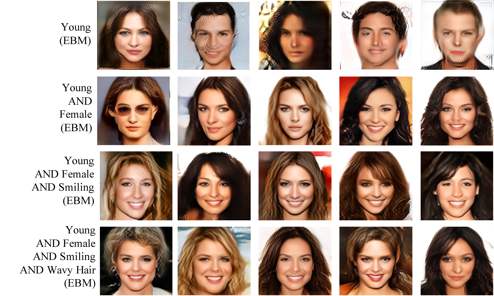
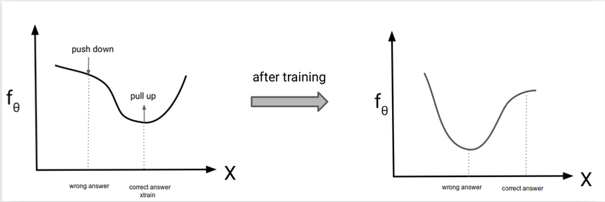

Introduction
In the world of generative models, techniques like VAEs, GANs, and normalizing flows have each carved out their niche—but all of them come with specific constraints. Energy-Based Models (EBMs) offer a powerful alternative that’s architecturally flexible, conceptually elegant, and growing in popularity in modern deep learning research.
Limitations of Mainstream Generative Models
| Model | Pros | Cons |
|---|---|---|
| VAEs | Probabilistic framework, tractable ELBO | Model architecture restrictions; blurry samples |
| Normalizing Flows | Exact likelihood, invertibility | Restricted to invertible architectures; expensive Jacobian computation |
| Autoregressive Models | Exact likelihood | Slow sampling; autoregressive dependency limits parallelism |
| GANs | High-quality samples; flexible | No likelihood; unstable training; mode collapse |
These models attempt to approximate the true data distribution \(P_{\text{data}}\) by selecting a model \(P_\theta\) from a constrained family, often limited by the need for tractable likelihoods, invertible mappings, or adversarial training stability.
Math Review
Understanding the Probability Foundation Behind EBMs
In generative modeling, a valid probability distribution \(p(x)\) must satisfy:
Non-negativity:
\[ p(x) \geq 0 \]Normalization:
\[ \int p(x)\, dx = 1 \]
While it’s easy to define a function that satisfies \(p(x) \geq 0\) (e.g., using exponentials), ensuring that it also sums to 1 — i.e., \(\int p(x)\, dx = 1\) — is much more difficult, especially for flexible functions like neural networks.
Why do we introduce \(g(x)\)?
Instead of modeling \(p(x)\) directly, we define a non-negative function \(g(x) \geq 0\) and turn it into a probability distribution by normalizing:
\[ p_\theta(x) = \frac{g_\theta(x)}{Z(\theta)}, \quad \text{where} \quad Z(\theta) = \int g_\theta(x)\, dx \]
This trick simplifies the problem by separating the two requirements:
- \(g_\theta(x)\) ensures non-negativity
- \(Z(\theta)\) enforces normalization
This normalization constant \(Z(\theta)\) is also known as the partition function.
Intuition
Think of \(g_\theta(x)\) as a scoring function:
- Higher \(g_\theta(x)\) means more likely
- Dividing by \(Z(\theta)\) rescales these scores to form a valid probability distribution
From Scores to Probabilities in EBMs
Energy-Based Models follow the same idea we’ve established earlier: define a scoring function \(f_\theta(x)\) that assigns high values to likely data points, and then convert these scores into probabilities using an exponential transformation and normalization.
This allows us to build flexible probabilistic models without needing tractable likelihoods or invertible mappings.
We use an exponential function because:
- It guarantees non-negativity: \(\exp(f_\theta(x)) \geq 0\)
- It allows us to interpret \(f_\theta(x)\) as an unnormalized log-probability
- It connects naturally to many well-known distributions (e.g., exponential family, Boltzmann distribution)
We define:
\[ g_\theta(x) = \exp(f_\theta(x)) \quad \Rightarrow \quad p_\theta(x) = \frac{e^{f_\theta(x)}}{Z(\theta)} \]
To align with the physics intuition that lower energy = higher probability, we define the energy function as:
\[ E_\theta(x) = -f_\theta(x) \]
This gives us the classic EBM form:
\[ p_\theta(x) = \frac{e^{-E_\theta(x)}}{Z(\theta)} \]
This formulation gives EBMs the freedom to use any differentiable function for \(f_\theta(x)\), and only requires that we can compute or approximate its gradients.
Practical Applications
Energy-Based Models (EBMs) offer unique benefits in scenarios where traditional models struggle. Below are two practical applications that demonstrate how EBMs shine in real-world settings.
1. When You Don’t Need the Partition Function
In general, evaluating the full probability \(p_\theta(x)\) requires computing the partition function \(Z(\theta)\):
\[ p_\theta(x) = \frac{1}{Z(\theta)} \exp(f_\theta(x)) \]
Key Insight
In some applications, we don’t need the exact probability — we only need to compare scores.
This allows EBMs to be useful even when the partition function is intractable.
When comparing two samples \(x\) and \(x'\), we can compute the ratio of their probabilities:
\[ \frac{p_\theta(x)}{p_\theta(x')} = \exp(f_\theta(x) - f_\theta(x')) \]
This lets us determine which input is more likely — without ever computing \(Z(\theta)\) — a powerful advantage of EBMs.
Practical Applications:
- Anomaly detection: Identify inputs with unusually low likelihood.
- Denoising: Prefer cleaner versions of corrupted data by comparing likelihoods.
- Object Recognition: Given an input image \(x\), assign the most likely label \(y\) by minimizing energy \(E(y, x)\).
- Sequence Labeling: For each input token \(x\), select the tag \(y\) (e.g., part-of-speech) that minimizes \(E(y, x)\).
- Image Restoration: Given a noisy image \(x\), predict a clean version \(y\) by selecting the output with lowest energy \(E(y, x)\)
2. Product of Experts (Compositional Generation)
In some cases, we want to combine multiple expert models that each score different attributes of an input \(\mathbf{x}\) — for example, age, gender, or hairstyle. This is where Energy-Based Models (EBMs) shine through Product of Experts (PoE).
Suppose you have three trained expert models \(f_{\theta_1}(x)\), \(f_{\theta_2}(x)\), and \(f_{\theta_3}(x)\). A tempting idea is to combine their scores additively and exponentiate:
\[ \exp\left(f_{\theta_1}(x) + f_{\theta_2}(x) + f_{\theta_3}(x)\right) \]
To make this a valid probability distribution, we normalize:
\[ p_{\theta_1, \theta_2, \theta_3}(x) = \frac{1}{Z(\theta_1, \theta_2, \theta_3)} \exp\left(f_{\theta_1}(x) + f_{\theta_2}(x) + f_{\theta_3}(x)\right) \]
This behaves like a logical AND: if any expert assigns low score, the overall likelihood drops. This contrasts with mixture models (like Mixture of Gaussians), which behave more like OR.
Example
In the figure below (Du et al., 2020), EBMs were used to model attributes such as “young”, “female”, “smiling”, and “wavy hair”. Combining them via Product of Experts allowed for flexible generation of images with multiple attributes:

Key Benefits of EBMs
Very flexible model architectures
No need for invertibility, autoregressive factorization, or adversarial design.
Stable training
Compared to GANs, EBMs can be more robust and easier to optimize.
High sample quality
Capable of modeling complex, multi-modal data distributions.
Flexible composition
Energies can be combined to support multi-task objectives or structured learning.
Limitations of EBMs
Despite their strengths, EBMs come with notable challenges:
Hard Sampling
- No direct way to draw samples from \(p_\theta(x)\)
- Requires iterative MCMC methods (e.g., Langevin dynamics, Metropolis-Hastings)
- Sampling cost is high and scales poorly in high dimensions
Hard Likelihood Evaluation and Learning
- Partition function \(Z(\theta)\) is intractable
- Cannot evaluate \(\log p_\theta(x)\) directly
- Learning requires pushing down energy of incorrect samples, not just increasing energy of training data
No Feature Learning (by default)
- EBMs don’t learn latent features by default unless explicitly structured (e.g., RBMs)
Training and Inference in EBMs
The goal in training Energy-Based Models (EBMs) is to assign higher scores (i.e., lower energy) to correct examples, and lower scores (higher energy) to incorrect ones. This corresponds to maximizing the (unnormalized) likelihood of the training data:
\[ p_\theta(x_{\text{train}}) = \frac{\exp(f_\theta(x_{\text{train}}))}{Z(\theta)} \]
This expression tells us that increasing the score for \(x_{\text{train}}\) is not enough — we must also decrease scores for other \(x\) to reduce \(Z(\theta)\) and make the probability higher relatively.
Log-Likelihood and Its Gradient
We start by writing the log-likelihood:
\[ \log p_\theta(x_{\text{train}}) = f_\theta(x_{\text{train}}) - \log Z(\theta) \]
Taking the gradient with respect to \(\theta\):
\[ \nabla_\theta \log p_\theta(x_{\text{train}}) = \nabla_\theta f_\theta(x_{\text{train}}) - \nabla_\theta \log Z(\theta) \]
To compute this, we need the gradient of the log partition function:
\[ Z(\theta) = \int \exp(f_\theta(x))\, dx \]
Applying the chain rule:
\[ \nabla_\theta \log Z(\theta) = \frac{1}{Z(\theta)} \int \exp(f_\theta(x)) \nabla_\theta f_\theta(x)\, dx = \mathbb{E}_{x \sim p_\theta} \left[ \nabla_\theta f_\theta(x) \right] \]
Substitute this back:
\[ \nabla_\theta \log p_\theta(x_{\text{train}}) = \nabla_\theta f_\theta(x_{\text{train}}) - \mathbb{E}_{x \sim p_\theta} \left[ \nabla_\theta f_\theta(x) \right] \]
The first term is straightforward — it’s the gradient of the model’s score on the training point.
But the second term, the expectation over model samples, is difficult. It requires drawing samples from \(p_\theta(x)\), which in turn depends on the intractable normalization constant \(Z(\theta)\).
To deal with this, we use sampling-based approximations like Contrastive Divergence.
Contrastive Divergence
We approximate the expectation:
\[ \mathbb{E}_{x \sim p_\theta} \left[ \nabla_\theta f_\theta(x) \right] \approx \nabla_\theta f_\theta(x_{\text{sample}}) \]
This gives:
\[ \nabla_\theta \log p_\theta(x_{\text{train}}) \approx \nabla_\theta f_\theta(x_{\text{train}}) - \nabla_\theta f_\theta(x_{\text{sample}}) = \nabla_\theta \left( f_\theta(x_{\text{train}}) - f_\theta(x_{\text{sample}}) \right) \]
Contrastive Divergence Algorithm:
- Sample \(x_{\text{sample}} \sim p_\theta\) (typically via MCMC)
- Take a gradient step on:
\[ \nabla_\theta \left( f_\theta(x_{\text{train}}) - f_\theta(x_{\text{sample}}) \right) \]
This encourages the model to increase the score of the training sample and decrease the score of samples it currently believes are likely.
EBM Training Recap
- Want: High scores (low energy) for real data
- Avoid: High scores for incorrect data
- Can’t compute exact gradient due to \(Z(\theta)\)
- So: Approximate using Monte Carlo sample \(\sim p_\theta(x)\)
Intuition Recap
- Pull up the training sample: \(\nabla_\theta f_\theta(x_{\text{train}})\)
- Push down samples from the model: \(\nabla_\theta f_\theta(x_{\text{sample}})\)
- The model improves by sharpening its belief in real data and correcting mistaken high-scoring areas of the space.
 During training, EBMs increase the score of correct samples and decrease the score of incorrect ones.
Source: course material from CS236: Deep Generative Models
Sampling from Energy-Based Models
Recall that EBMs define a probability distribution as:
\[ p_\theta(x) = \frac{1}{Z(\theta)} \exp(f_\theta(x)) \]
Unlike autoregressive or flow models, there is no direct way to sample from \(p_\theta(x)\) because we cannot easily compute how likely each possible sample is. That’s because the normalization term \(Z(\theta)\) is intractable.
Key Insight
We can still compare two samples \(x\) and \(x'\) without needing \(Z(\theta)\):
\[ \frac{p_\theta(x)}{p_\theta(x')} = \exp(f_\theta(x) - f_\theta(x')) \]
This property is useful for tasks like ranking, anomaly detection, and denoising.
While we can’t sample from \(p_\theta(x)\) directly due to the intractable \(Z(\theta)\), we can still generate approximate samples using Markov Chain Monte Carlo (MCMC) methods.
1. Metropolis-Hastings (MH) MCMC
To sample from \(p_\theta(x)\), we use an iterative approach like MCMC:
- Initialize \(x^0\) randomly
- Propose a new sample: \(x' = x^t + \text{noise}\)
- Accept or reject based on scores:
- If \(f_\theta(x') > f_\theta(x^t)\), set \(x^{t+1} = x'\)
- Else set \(x^{t+1} = x'\) with probability \(\exp(f_\theta(x') - f_\theta(x^t))\)
- Otherwise, set \(x^{t+1} = x^t\)
- Repeat this process until the chain converges
Pros:
- General-purpose
- Guaranteed to converge to \(p_\theta(x)\) under mild conditions
Cons:
- Can take a very long time to convergence - Sensitive to proposal distribution
- Computationally expensive in high dimensions
2. Unadjusted Langevin MCMC (ULA)
To sample from \(p_\theta(x)\), Unadjusted Langevin MCMC uses gradient information to guide proposals:
- Initialize \(x^0 \sim \pi(x)\)
- Repeat for \(t = 0, 1, 2, \dots, T - 1\):
- Sample \(z^t \sim \mathcal{N}(0, I)\)
- Update: \(x^{t+1} = x^t + \epsilon \nabla_x \log p_\theta(x^t) + \sqrt{2\epsilon} z^t\)
- Sample \(z^t \sim \mathcal{N}(0, I)\)
For EBMs, since \(\nabla_x \log p_\theta(x) = \nabla_x f_\theta(x)\) the update becomes:
\[ x^{t+1} = x^t + \epsilon \nabla_x f_\theta(x^t) + \sqrt{2\epsilon} z^t \]
Pros:
- Uses gradient to improve proposal
- Often faster mixing than random-walk methods
Cons:
- Still requires many steps for good convergence
- Sensitive to step size \(\epsilon\)
3. Adjusted Langevin MCMC (ALA)
To sample from \(p_\theta(x)\), Adjusted Langevin MCMC applies a step after each Langevin update to ensure samples follow the correct stationary distribution.
This makes it a corrected version of ULA with proper stationary distribution.
- \(x^0 \sim \pi(x)\)
- for \(t = 0, 1, 2, \dots, T - 1\):
- Sample \(z^t \sim \mathcal{N}(0, I)\)
- Propose: \(x' = x^t + \epsilon \nabla_x \log p_\theta(x^t) + \sqrt{2\epsilon} z^t\)
- Forward proposal: \(q(x^{t+1} \mid x^t) = \mathcal{N}\left(x^{t+1} \mid x^t + \epsilon \nabla_x \log p_\theta(x^t),\ 2\epsilon I\right)\)
- Reverse proposal: \(q(x^t \mid x^{t+1}) = \mathcal{N}\left(x^t \mid x^{t+1} + \epsilon \nabla_x \log p_\theta(x^{t+1}),\ 2\epsilon I\right)\)
- Accept \(x\) with probability \(\alpha = \min\left(1, \frac{p_\theta(x') \cdot q(x^t \mid x')}{p_\theta(x^t) \cdot q(x' \mid x^t)}\right)\)
- If accepted: \(x^{t+1} = x'\)
- Otherwise: \(x^{t+1} = x^t\)
- If accepted: \(x^{t+1} = x'\)
- Sample \(z^t \sim \mathcal{N}(0, I)\)
For EBMs, since
\[ \nabla_x \log p_\theta(x) = \nabla_x f_\theta(x) \] and \[ q(x' \mid x^t) = \mathcal{N}\left(x' \mid x^t + \epsilon \nabla_x f_\theta(x^t), 2\epsilon I\right) \]
the proposal becomes:
\[ x' = x^t + \epsilon \nabla_x f_\theta(x^t) + \sqrt{2\epsilon} z^t \]
Summary
All these methods aim to sample from \(p_\theta(x)\), but differ in how they explore the space:
- MH is simple but inefficient.
- ULA is gradient-guided but approximate.
- Adjusted Langevin corrects ULA with MH.
Sampling is a core challenge in EBMs — especially because we need to sample during every training step when using contrastive divergence.
📚 References
[1] Atcold, Y. (2020). NYU Deep Learning Spring 2020 – Week 07: Energy-Based Models. Retrieved from https://atcold.github.io/NYU-DLSP20/en/week07/07-1/
[2] LeCun, Y., Hinton, G., & Bengio, Y. (2021). A Path Towards Autonomous Machine Intelligence. arXiv. Retrieved from https://arxiv.org/pdf/2101.03288
[3] MIT. (2022). Energy-Based Models – MIT Class Project. Retrieved from https://energy-based-model.github.io/Energy-based-Model-MIT/
[4] University of Amsterdam. (2021). Deep Energy Models – UvA DL Notebooks. Retrieved from https://uvadlc-notebooks.readthedocs.io/en/latest/tutorial_notebooks/tutorial8/Deep_Energy_Models.html
[5] MIT. (2022). Compositional Generation and Inference with Energy-Based Models. Retrieved from https://energy-based-model.github.io/compositional-generation-inference/